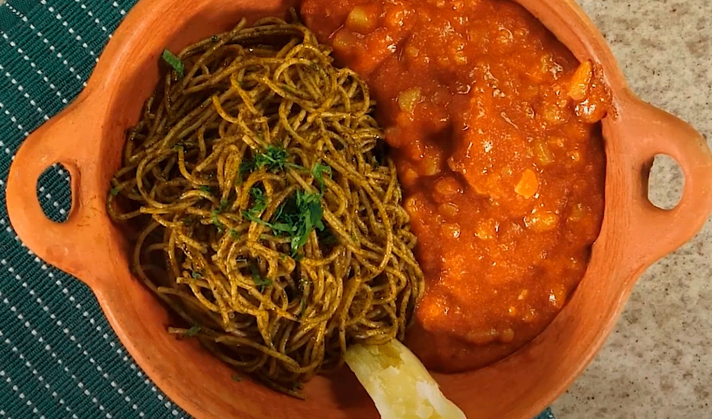

Carapulcra con sopa seca
La carapulcra con sopa seca es un clásico lleno de sabor y tradición. Su mezcla de aromas, ajíes y texturas la convierte en un plato irresistible que reúne a todos en la mesa. ¡Anímate a prepararla y disfruta de uno de los sabores más queridos de la cocina peruana!
Ingredientes
Para la sopa seca:
- 4 presas de pollo
- 1/2 kg de espaguetis
- 1 atado de albahaca
- 1 atado de perejil
- 1/2 cebolla morada
- 2 cucharadas de ajo molido
- 15 gramos de achiote entero
- 2 tomates
- Aceite vegetal
- Comino, sal y pimienta
Para la carapulcra
- 1 1/2 kg de papa negrita
- 3 cucharadas de ají panca molido
- 1/2 cebolla morada
- 1 cucharada de ajo molido
- 1 kg de panceta o pierda de chancho
- 1 yuca
- Aceite vegetal
- Comino, sal y pimienta
Instrucciónes
Para la carapulcra
- Lavar bien la papa seca y dejarla remojar en agua tibia durante 20 a 30 minutos.
- En una olla, calentar el aceite y sofreír la cebolla picada hasta que esté transparente.
- Agregar el ajo molido, el ají panca y el ají amarillo. Cocinar unos minutos hasta que el aderezo tome aroma.
- Incorporar la carne en trozos y sellarla por unos minutos.
- Añadir la papa seca escurrida, el tomate picado y el caldo. Mezclar bien.
- Cocinar a fuego medio durante 25 a 30 minutos, removiendo ocasionalmente.
- Agregar el maní molido y sazonar con sal, pimienta y comino. Cocinar unos minutos más hasta que espese.
Para la Sopa Seca
- En otra olla o sartén grande, calentar el aceite y sofreír la cebolla picada.
- Añadir el ajo molido, el ají panca y el ají amarillo. Cocinar hasta que el aderezo esté bien integrado.
- Incorporar los tomates licuados y cocinar durante unos minutos.
- Agregar la albahaca licuada, el perejil y el caldo de pollo. Mezclar bien.
- Añadir los fideos y cocinar a fuego medio hasta que absorban gran parte del líquido.
- Rectificar la sal y la pimienta. La sopa debe quedar jugosa pero no muy líquida.
- Servir caliente y, si se desea, espolvorear queso fresco rallado.
Nutrición
- Calorías: 550 a 650 kcal
- Proteínas: 25 a 30 g
- Carbohidratos: 60 a 70 g
- Grasas: 20 a 25 g
- Fibra: 4 a 6 g